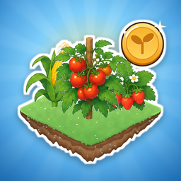

MATU FArM
Đang tải nông trại…
Chơi toàn màn hình
Ẩn thanh trình duyệt để nông trại rộng hết màn hình.
Toàn màn hình
Để sau
Chơi toàn màn hình trên iPhone
Chạm nút
Chia sẻ
của Safari rồi chọn
Thêm vào MH chính
. Mở game từ biểu tượng đó sẽ không còn thanh trình duyệt.
Đã hiểu
Xoay ngang điện thoại để chơi